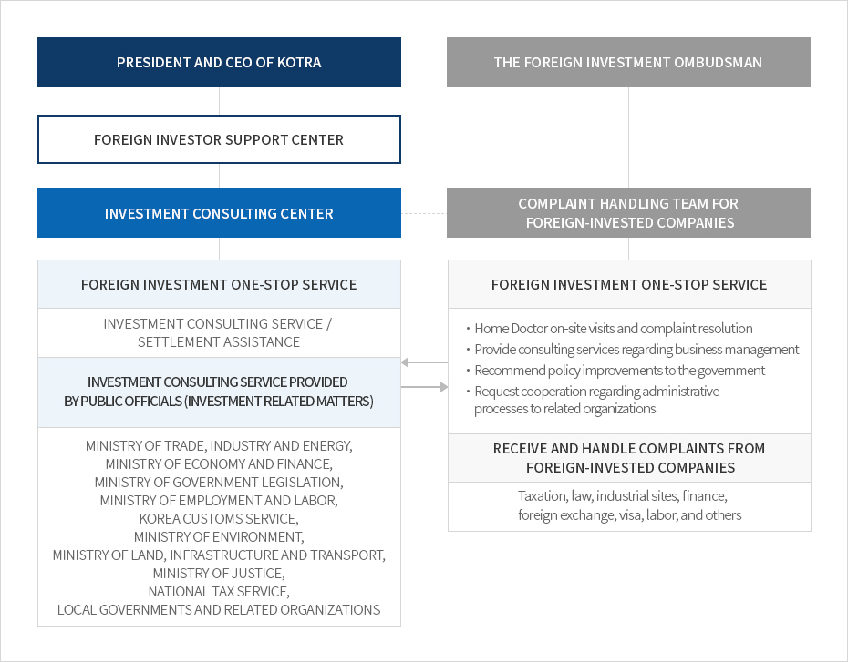

Complaint Handling (Foreign Investment Ombudsman)
- Home
- IK Services
- Major Businesses
- Complaint Handling (Foreign Investment Ombudsman)
Introduction of the Foreign Investment Ombudsman
The Office of the Foreign Investment Ombudsman is a complaint handling body for foreign-invested companies which has been devoted to resolving challenges faced by foreign-invested companies during business activities in Korea since 1999. The foreign investment ombudsman is commissioned by the President of the Republic of Korea. The office operates a Home Doctor system with specialists from various areas, including finance, accounting, law, industrial sites, taxation, and labor, and strives to create a more stable environment for foreign-invested companies.
Korea’s foreign investment ombudsman system has been praised by international society, including the United Nations Conference on Trade and Development (UNCTAD) and the Asia-Pacific Economic Cooperation (APEC), as a successful case for facilitating cross-border investment and preventing investor-state disputes (ISD). Many countries, including Russia, Kazakhstan, Brazil, and Vietnam, have benchmarked Korea’s system. The office works hard to prevent any possible problems and improve Kora’s investment environment by utilizing accumulated data from previous cases.
Link to the Office of the Foreign Investment Ombudsman
Organization


- President and ceo of KOTRA
- Foreign Investor support center
- Investment consulting center
- foreign investment one-stop serviceinvestment consulting service / settlement assistance
- investment consulting service provided by public officials (investment realated matters) ministry of trade, industry and energy, ministry of economy and finance, ministry of government legislation, ministry of employment and labor, KOREA CUSTOMS service, ministry of environment, ministry of land, infrastructure and transport, ministry of justice, national tax service, local governments and related organiztions
- The foreign investment ombudsman
- complaint handling team for foreign-invested companies
-
foreign investment one-stop service
- Home Doctor on-site visits and complaint resolution
- provide consulting services regarding business management
- recommend policy improvements to the government
- request cooperation regarding administrative processes to related organization
- receive and handle complaints from foreign-invested companies taxation, law, industrial sites, finance, foreign exchange, visa, labor, and others

Complaint Handling Procedures
IDENTIFY COMPLAINTS OF FOREIGN-INVESTED COMPANIES
HOST MEETINGS WITH RELATED ORGANIZATIONS
- AMCHAM
- ECCK
- Seoul Japan Club
- Local government/ FEZ
IDENTIFY COMPLAINTS
- Review the investment environment
- Study cases from major countries
- Analyze and identify complaints
- Review resolutions
RECEIVE REQUESTS FROM FOREIGN-INVESTED COMPANIES
- On-site visits by Home Doctors
- 1:1 consultations forvisiting companies
- Host meetings with oreign invested companies
ASSIGN HOME DOCTORS, CONDUCT FEASIBILITY STUDIES, AND REVIEW RELATED LAWS
- CONSULTATIONS FOR FOREIGN-INVESTED COMPANIES
- RECOMMEND POLICY IMPROVEMENTS TO THE GOVERNMENT
- RESOLVE COMPLAINTS THROUGH AMENDMENTS OF RELATED LAWS AND ADMINISTRATIVE SUPPORT

Home Doctor Services
-
Home Doctors are members of the Complaint Handling Team under the Office of the Foreign Investment Ombudsman.
- A total of ten Home Doctors are available from the fields of law (2), finance (2), taxation (1), accounting (1), industrial sites (1), HR-labor (1), IT and intellectual property rights (1), and bio (1).
- Home Doctors, who are specialists in specific industries and regions, visit foreign-invested companies, and identify and handle their complaints.
-
Home Doctor Hotline and On-Site Visits
- Assign a Home Doctor for each local government and foreign-invested company in the region; operate a hotline connecting Home Doctors, the local government, and the company to better identify and handle complaints
- Home Doctors, who are specialists in specific industries and regions, visit foreign-invested companies, and identify and handle their complaints.